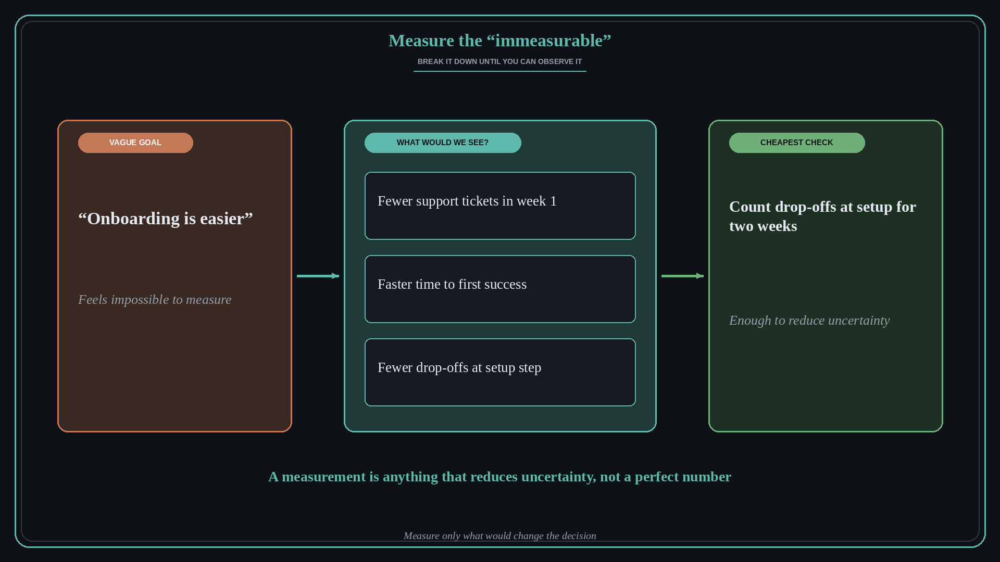

Anything you care about can be measured: break it down first
Source: George Nurijanian (@nurijanian), drawing on Douglas Hubbard's How to Measure Anything
original post
What it claims
George Nurijanian turned Douglas Hubbard's book How to Measure Anything into a reusable AI skill. He reaches for it when he needs to measure something complex, ambiguous, or supposedly “immeasurable”. You paste in the context, and it breaks the problem down, iterates until it reaches the exact aspects you would need to measure, and then finds the lowest-cost way to measure them. The core idea from Hubbard's book is that a measurement is anything that reduces your uncertainty, not something that has to be perfect.
Why it matters for a PO
POs are regularly asked to prove fuzzy things: is the onboarding “easier”, is the team “more aligned”, is this feature “valuable”. Calling them immeasurable usually means nobody has asked what we would actually observe if they improved. Breaking a vague goal into observable behaviours turns an argument of opinions into a small, cheap check, and a rough number that reduces uncertainty is often enough to make the decision.
3 takeaways
- Ask “if this improved, what would we see happen?” until the answer is an observable behaviour.
- Measure only the parts that would change the decision you are facing.
- Pick the cheapest measurement that reduces uncertainty; precision can come later if it matters.
Practice this week
Pick one goal on your roadmap that the team calls hard to measure. Write it at the top of a page and keep asking “what would we observe if this got better?” until you have two or three concrete behaviours. Choose the cheapest one to count this sprint, and note what result would change your next decision.